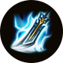
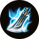
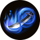
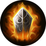
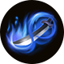
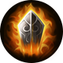

Jianwang 3
"Jianwang 3" is a martial arts-themed massively multiplayer online role-playing game developed by Xishanju
Studio. It is the sixth work of the Swordsman Love series and the third work of the series after the online
gamification. The story background of the game is set in the reign of Emperor Xuanzong of the Tang Dynasty
earlier than the background of other works in the series.
The version in mainland China adopts the monthly subscription fee system and point card fee system.
"Jian Wang 3" presents the world of traditional Chinese martial arts by virtue of terrain and vegetation
rendering technology, scene light and shadow special effects, and SpeedTree engine special effects. Elements
are
integrated into the game, showing players a magnificent and gorgeous Datang world. At the same time, "Jian
Wang
3" brings players a new gaming experience through the new ACT gameplay created by the physics engine.
"Jian Wang 3" sells no fee-based content that destroys the fair environment of the game, that is, the items
that need to be charged in the game will not affect the character data.
Xishanju released "Jian Wang 3" in early 2008. On August 28, 2009, the public beta of "Jianwang III" was
launched. 22 expansions have been released so far.
Game Story
"In the year 745 AD, during the fourth year of the Tianbao era in the Tang Dynasty, a significant event took
place in August. Yang Yuhuan was officially bestowed the title of Yang Guifei, marking the beginning of her
ten-year period of favor and influence. It was also in this same year that An Lushan received an imperial order
to enter the court and meet the Emperor in Chang'an. The prosperity of Chang'an once again ignited his ambitious
desires, but the might of the Tang Dynasty's elite forces, known as the Tiancefu, astounded him. He had never
imagined that the Tang Dynasty possessed such a formidable military. In order to achieve his goals, An Lushan
simultaneously persuaded Yang Guozhong to support the Shenji Army and suppress the Tiancefu, while secretly
preparing his own army - the Wolf Teeth Army. At the same time, he realized the need to deal with the
influential martial arts factions of the Central Plains, as he had witnessed the power and influence of the
Cangjian Mountain Villa's famous swordsmen at a martial arts gathering. To truly seize control of the Central
Plains, he knew that he had to eliminate this major threat from the martial arts community. It was at this
crucial moment that a mysterious figure entered An Lushan's camp. And thus, the story of Jianwang 3 begins from
this year."

In Game
Characters
ChunYang
In the fourth year of Chang'an (704 A.D.), with the support of the imperial court, Lu Dongbin established
Chunyang Temple in Huashan, Xiyue. After Xuanzong ascended the throne, Chunyang achieved greater development.
The current head of Chunyang is Li Wangsheng. He and Lu Dongbin's other four disciples, Zhuo Fengming,
Shangguan Boyu, Yu Rui, and Qi Jin, are called the "Five Sons of Chunyang".
Chunyang Martial Arts integrates the true essence of Taoism, and all methods are natural. Not only can one's
own internal force be operated as one wishes, but also a Tai Chi aura can be constructed, which is consistent
in offense and defense, and can advance and retreat freely. Let the enemy be strong and the enemy weak, let
nature take its course, and respond to all changes with the same.
QiXiu
During the Shenlong period, a strange woman appeared in the martial arts world, known as Aunt Gongsun. She
founded Yiying Tower by the Slender West Lake, and carried forward the sword dance art.
More than ten years later, the seven orphans they took in were well-known in the Jianghu, so they were named
"Qixiu", and Yiying Building was also renamed Qixiufang. For a while, Qixiufang became one of the three most
elegant places in the Tang Dynasty, as famous as Wanhua Valley and Changgemen.
Qixiu's moves are gorgeous but not cumbersome. Manhua's superb dance poses hide all kinds of mysteries,
either weakening the enemy in invisible places, or helping friends in an instant. Dazzling people are hard to
guard against. They can often decide the overturning of the battle situation at unexpected times.
WanHua
In the 23rd year of the Kaiyuan period of the Tang Dynasty, Dongfang Yuxuan, the owner of Wanhua Valley,
traveled all over the world, stumbled into Qinling Qingyan in a trance, and sighed that there was such a fairy
place in the western mountains, so he recruited wise men to live in seclusion here, and named it "Wanhua
Valley".
The most subtle point of Wanhua's martial arts is to tap acupuncture points to cut off the pulse, which can
control life and death at the front line. By combining superb medical skills with acupressure techniques, you
can not only heal your partner's injuries and prolong your life, stabilize the battle situation, but also
stand up and use exquisite techniques to control the enemy and control the field.
TianCe
Tiance Mansion is the army of the Tang Dynasty in charge of Jianghu affairs. There is no real sense of good
and evil in their hearts. Only adhere to the belief that the Li and Tang Dynasties are the foundation. In
order to maintain the stability of the Tang Dynasty, they are willing to meet gods and kill gods, and Buddhas
to kill Buddhas, even if they are in a catastrophe.
Tiance martial arts is different from other sects, never emphasizing moves or principles, Tiance martial arts
are often directly evolved from martial arts in war, it is extremely practical, and its moves are deadly,
without any fancy. Coupled with Tiance Mansion's unique military formation and horse fighting, it can advance
and retreat freely, with amazing power and incomparable domineering.
CangJian
Although it is only the second generation of the Tibetan Sword Villa to be passed down to the current owner,
Ye Ying, the name of Tibetan Sword is known to everyone. Since the establishment of the village, Zangjian has
acted in a reasonable and orderly manner, and there have been many famous heroes in the village. During the
Tianbao period, the Zangjian Ye family, the Tang family in the middle of Shu, the Badao Liu family, and the
Changge Yang family were also known as the four great families.
Tibetan sword martial arts are well versed in the ultimate meaning of the sword. Tibetan sword disciples are
equipped with two light and heavy swords, which can be used as you wish, and you can quickly switch between
different sword-handling methods. It is so ingenious and clumsy, and it is as heavy as it is light, making the
opponent confused by the profound swordsmanship and unable to deal with it. The sword has a sharp edge but
does not show its shape, and the heart is the sword, which is the hidden sword.
ShaoLin
Shaolin has an indissoluble bond with the Li dynasty. In the third year of Tang Wude, Huixi, Tanzong and
other thirteen monks invaded the fief of Shaolin Temple because they were dissatisfied with Wang Renze, and
"led the crowd to reject the false masters". Thirteen monks broke into Zheng Bing's camp at night, captured
Wang Renze alive, and dedicated it to Li Shimin, making great contributions to King Qin's unification of the
country.
Shaolin martial arts emphasizes the use of Zen into martial arts, and the combination of Zen and martial
arts. The moves are wide open and wide, stable but not sluggish, every move is full of the meaning of Buddha's
light, and the energy can be transported to the whole body in the later stage of practice. Even if you are
hit, the opponent will be greatly injured. damage.
WuDu
The Five Poisons Sect (self-proclaimed the Five Sacred Sects internally) is a mysterious organization. Even
many of their own congregants don’t know how the Five Sacred Sect was founded. For the Central Plains martial
arts, the Five Poisons are always the most mysterious sect. There is no other way but to die, so it has become
the sect that martial arts people are least willing to provoke.
The Five Poisons Martial Arts combines Miaojiang Gu, Five Poisons and Insect Control. Through the mysterious
use of poison and Gu, it is possible to attack the enemy with various strange and highly poisonous poisons, to
heal injuries and extend life with Gu, and to control five kinds of poisonous insects: Holy Scorpion, Jade
Toad, Spirit Snake, Wind Centipede, Sky Spider, For Miaojiang, the secret technique is not passed on.
TangMen
The Tang Sect, originally a family of assassins, only appeared in Sichuan and Sichuan. The appearance of Tang
Jian spread the reputation of Tangmen all over the Central Plains, and became the number one master in the
martial arts at that time. Later, the Beggar Gang and the Tang Sect allied to fight the Mingjiao in Fenghua
Valley, but they were severely injured, and the vitality of the Tang Sect was seriously injured. The current
head of the Tang Sect, Tang Aotian, lost his legs, but his idea of revitalizing the Tang Sect has never
stopped .
Tangmen martial arts is famous for its hidden weapons and traps. He is good at making use of the deformable
thousand receivers and the elusive movement method to quietly arrange various mechanism traps, and cooperate
with various long-range poison poisoning concealed weapons, bows and arrows, which are unpredictable and
amazingly powerful.
MingJiao
Mingjiao was created by Lu Weilou. He manages well and makes Mingjiao continue to grow. However, if it is
strong, it will be reversed, and if it is prosperous, it will decline. Tang Xuanzong was furious because he
entered the palace to persuade him. He ordered the Mingjiao to be wiped out, which caused Mingjiao to suffer
great The blow fell into a trough since then, and Lu Weilou led some congregants to leave the Western Regions.
Mingjiao martial art has the power of the sun and the moon, it can often launch a devastating attack from an
unexpected place of the enemy, often making the enemy elusive, the attack is in vain, and it is impossible to
defend against. A firm belief can enable believers to be protected by Mingzun, and become a magical figure of
colored glaze. Even if they are attacked, they can also obtain new vitality from the enemy.
GaiBang
The Beggars' Clan was founded by Yin Tianci. The headquarter is located on Junshan Island in Dongting Lake.
"Loyalty" is the first rule of the gang. Although it is called the Beggar Clan, the attire does not have to be
as tattered as beggars. The members of the Beggar Clan have strange and strange backgrounds and each has its
own temperament.
The martial arts of the beggar gang is famous all over the world for its "Eighteen Dragon Subduing Palms" and
"Dog Beating Stick Technique". The Subduing Dragon Palm was created by Yin Tianci, and was later perfected by
the current leader Guo Yan. Once it is used, it flows like clouds and flowing water, forcing the enemy back
with continuous attacks. The dog-beating stick method is a very high and profound martial art, and only those
with exquisite minds can reach the profound state.
CangYun
In the third year of Wude, the thirteen stick monks of Shaolin Temple rescued Li Shimin when he was in
distress, which made him feel the great role of people in the world in the war. He decided to form a special
force composed of people in the martial arts and military masters , named Xuanjia Cangyun Army. In the fourth
year of Tianbao, Xue Zhi, commander of Cangyun, died in battle, and his deputy commander, Sun Wangqing,
succeeded him.
Cangyun martial arts was mainly handed down by Master Tanzong, which evolved into "Iron Bone Clothes".
"Fenshan Jin" is Li Jing's external kung fu, which was honed by generations of masters with the combination of
sword and shield.
ChangGe
In the sixth year of Wude (AD 623), Changgemen was founded on the shore of Qiandao Lake. It consists of
Xiangzhi Villa and Weishan Academy. Most of the gates are elegant people who love poetry and poetry. It
coincides with the turmoil turning to stability. At that time, the Chinese scholars of the family yearned for
the freedom and freedom of the knights of the rivers and lakes, gradually began to practice martial arts, and
achieved both civil and military skills. Over time, they developed into a well-known martial arts family.
Changgemen introduced the writings of ancient sages and sages on the way of heaven, earth and nature into
Changgemen martial arts, forming the core characteristics of martial arts such as "Qi and music, piano sound
and sword". And he has mastered the skill of using internal force to stimulate the sound of the piano, which
can confuse the mind if it is light, and hurt people invisible if it is serious. Few people in the martial
arts can surpass Chang Gemen in the practice of the relationship between internal force and rhythm.
BaDao
Badao Villa is located in the north of the Yellow River, backed by Taihang Mountain, covering a very large
area. The villa's architecture has Wei and Jin styles, and it is integrated with the mountains and rocks. The
Liu family has been thriving for more than three hundred years, and was regarded as one of the few big
families in the Southern and Northern Dynasties since the Northern Wei Dynasty and the Sui and Tang Dynasties.
In the ups and downs of the rivers and lakes, the Liu family and all the Caos in the imperial court have made
achievements. They have made friends with the Dugu family, the Li family in Longxi, and the Changsun family;
Lu Shi became an old enemy.
Ba Dao martial arts originates from the long history and background of the school, and the design ideas and
the spirit of the school are mutually unified. Xiuming Dust Body, Pine Mist and Bamboo Mist, and Snow Flock
Golden Screen allow Ba Dao disciples to find the possibility to attack in any situation. The weapon setting of
two swords and one scabbard, combined with the brand-new overdraft martial arts mechanism, allows Ba Dao to
face difficulties even in difficult situations and launch continuous offensives.
PengLai
In the Qin Dynasty, in order to avoid the entrustment of the first emperor to search for immortals and ask
for medicine, Guiguzi led his disciples to travel eastward, and came across the legendary Penglai fairy
island, so he lived in seclusion here. Fang Zheng, the ancestor of the Fang family in Penglai, was a disciple
of Guiguzi. After Guiguzi wandered around, Fang Zheng took charge of the island affairs. Isolated from the
world above the East China Sea, the islanders inherited the ideas of a hundred schools of thought inherited
from the pre-Qin period, and gradually formed four schools of law, ink, Taoism, and medicine.
Penglai martial arts "Ling Haijue" is derived from Fang Gan's Wuhe swordsmanship based on Guigu's school, and
the fusion of Cang Tianjun's lineage of martial arts and Tianzhu Jialan monk's parachute technique. Elegant
Umbrella Dance combined with smart palms, and Penglai's ancestral carving skills to protect and assist
himself, formed an original and legendary martial arts.
LingXue
In the second year of the Holy Calendar of the Wu Zhou Dynasty, Li Longji, who had been confined in the
palace for seven years, regained his freedom. In the name of enjoying the snow, he secretly built Lingxue
Pavilion in Taibai Mountain. Since then, Lingxue Pavilion has been like a sharp blade in the dark night,
allowing Li Longji to save himself from danger many times in political struggles and remain invincible. The
Lingxue Pavilion is managed by the emperor, and there are two pavilions under it, the inner and outer
pavilions. The current owner of the outer pavilion is Li Chu, the eldest son of the emperor. Lingxue Pavilion
is a sharp weapon for the emperor to achieve political goals, and is the law enforcer of the dynasty in the
dark.
Lingxue wields a long whip weapon and is the royal assassin in martial arts novels, mysterious iron blood.
YanTian
Yan Tianzong was inherited from the lineage of the Yin-Yang family in the Warring States Period. During the
Zhenguan period of the Tang Dynasty, due to the secret prophecy of "Nv Wu Dai Tang", the suzerain Yuan
Tiangang took his sect disciples away from the desert. Yan Tianzong respects the way of heaven, firmly
believes that the operation of the way of heaven cannot be changed by human affairs, and rarely intervenes in
the affairs of the world. But following the way of heaven does not mean doing nothing, because entering the
world may also be part of the "way of heaven". If the destiny comes, Yan Tianzong will step into the
catastrophe of the mortal world without hesitation.
Yan Tianzong's martial art is the Taixuan Jing, and the main output method is long-range attack on the target
with spells. Using the soul lamp as a tool to lay out the "Qimen" martial arts, through the flexible use of
layouts, it highlights the strategic combat characteristics of Yantian martial arts, constantly changing the
layout form, and cannibalizing the enemy step by step.
YaoZong
Shennong, the descendant of Beitian Medicine School, established the sect since the end of Qin Dynasty. After
hundreds of years of development, it has developed from medicine to medicine, and famous doctors have been
born. The teachings of the medicine sect are "essence" for individuals, "passage" for sects, and "rule" for
the world. For medical skills and even subtle matters, those who practice medicine must be diligent and
tireless. There are many medicines and medicines, and the magic prescriptions and medicines are not achieved
in a day. In addition to the ambition of dripping stones, it is also necessary to preserve the records and
pass them on to future generations. The root of medicine is cure, the doctor treats his studies, the patient
cures the disease, and the not sick cures it.
The medicine sect is characterized by systematic medical education and herbal medicine research. After
joining the medicine sect, knights will experience and reproduce the process of the sect.
DaoZong
Daozong was founded in the 28th year of Tang Kaiyuan by Xie Yunliu, the founder. Xie Yunliu was originally
the first disciple of Lu Dongbin, the founder of Chunyang Palace, but was forced to leave the Central Plains
and flee to Japan because of his involvement in the imperial power struggle. During his sojourn in a foreign
country, Xie Yunliu abandoned his sword and picked up a knife, and practiced a set of "one strike kills"
actual combat sword skills, forming a school of his own. The Fujiwara family invited him to be the master of
martial arts. More than 20 years later, Xie Yunliu returned to the Central Plains, and won the sword "Can Xue"
in the fourth famous sword competition, which became famous in the Central Plains martial arts. But one year
later, Xie Yunliu found out that Fujiwara Hirosu ordered Isto-ryu to do evil in the Central Plains under his
own name, and Xie Yunliu broke with Isto-ryu completely. Afterwards, Xie Yunliu established his own sect in
the area of Wengzhou - Daozong.
The sword sect's weapon is Tang Hengdao. Daozong martial arts pays attention to practicality, and pursues
"one move must hit, one blow must kill". The disciples of the Dao Sect respect martial arts and morality, go
straight to the point, and spend their whole lives exploring the limits of martial arts.
 

 


